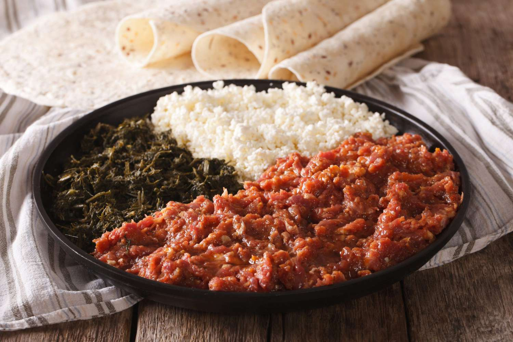

Kitfo is a traditional Ethiopian dish made from finely minced raw beef, seasoned with a mixture of spices, and often served with injera, a type of sourdough flatbread. The beef is usually minced to a paste-like consistency and mixed with mitmita, a spicy blend of ground chili peppers, cardamom, and other spices. It's also commonly flavored with niter kibbeh, a clarified butter infused with herbs and spices like garlic, ginger, and turmeric. While some versions of kitfo are served raw, others are lightly cooked by gently sautéing the mixture, making it a versatile dish. Kitfo is often accompanied by gomen (steamed greens) or chechebsa (a spiced flatbread), and is considered a dish that highlights the deep flavors and aromatic spices of Ethiopian cuisine.